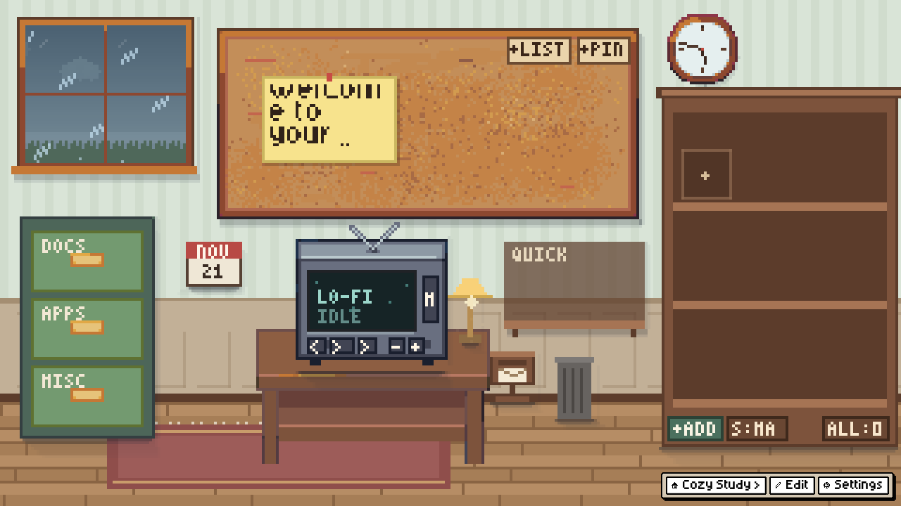
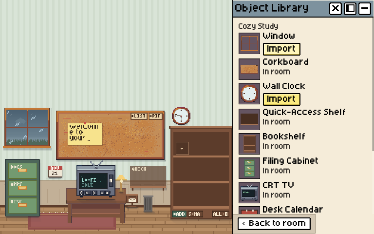

Free app for Windows 10 and 11
A pixel-art room for your Windows desktop
Open apps from a bookshelf, browse folders in a filing cabinet, and pin your to-do list to the wall.
Get BitDesktop
Desktop tools
Explore the controls as they appear in the Windows app.
Remove furniture and bring it back from the library. Move and resize pieces, draw sprites, or share your layout as a room pack.

Three rooms, ready to use
Pick a room for each display, or make a Project Room with its own pins, notes, and folders.